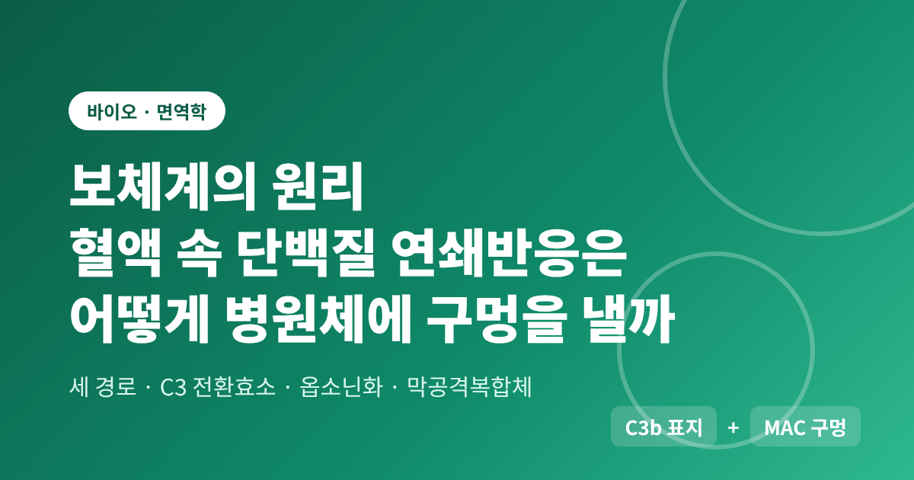
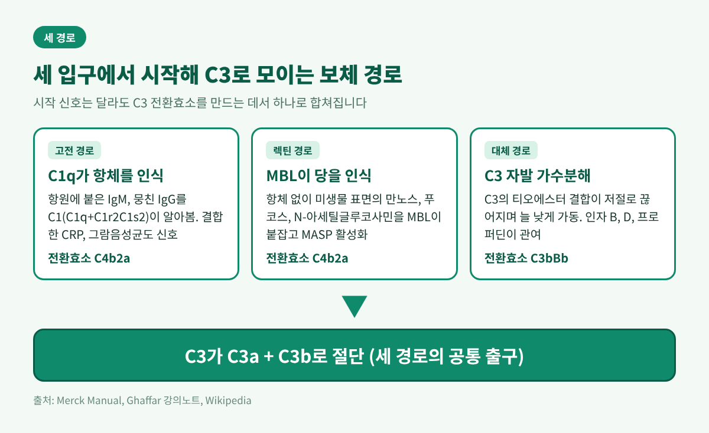
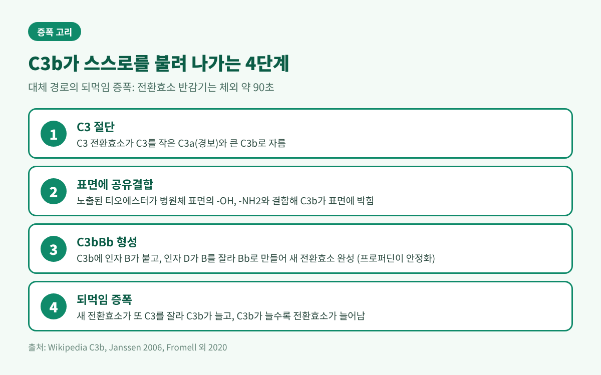
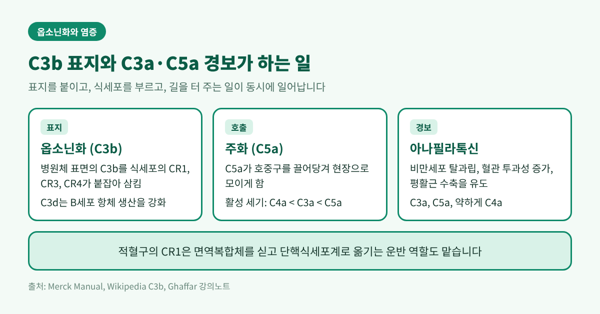
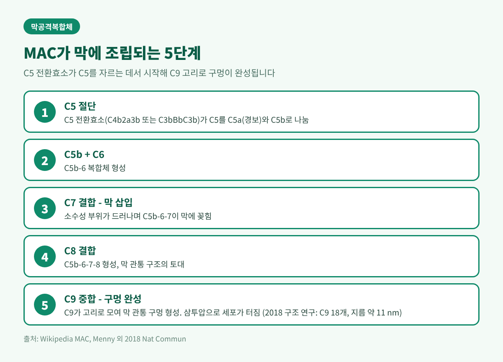
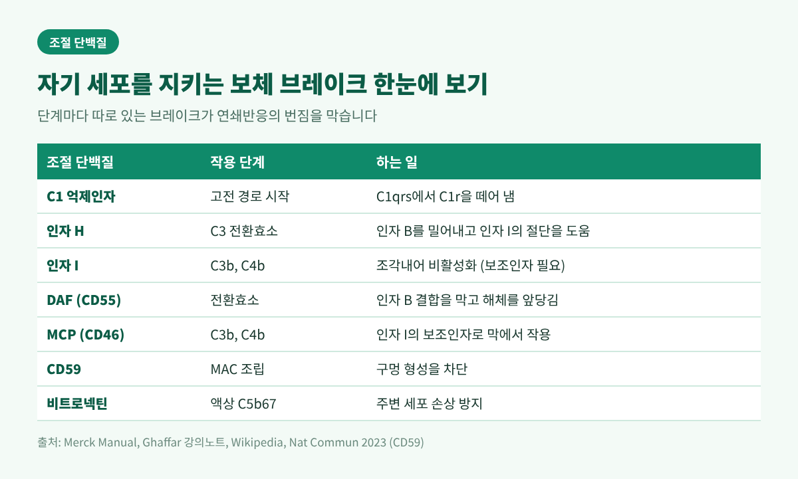

보체계의 원리, 혈액 속 단백질 연쇄반응이 병원체를 표지하고 구멍 내는 과정

3줄 요약
- 보체계는 혈액 속 20여 종 이상의 단백질이 도미노처럼 차례로 활성화되는 선천면역 장치입니다.
- 고전·렉틴·대체 경로는 모두 C3 절단으로 모이고, 여기서 병원체 표지(옵소닌화)와 구멍 뚫기(막공격복합체)가 갈라집니다.
- 조절 단백질이 자기 세포를 지키기 때문에 이 강력한 연쇄반응이 몸 전체로 번지지 않습니다.
오늘은 보체계가 어떻게 작동하는지 정리해 보려 합니다. 병원체를 알아보는 단계, 표지를 붙이는 단계, 구멍을 내는 단계를 순서대로 따라가겠습니다. 마지막에는 이 체계가 스스로를 공격하지 않도록 막는 장치도 살펴봅니다.
■ 보체계란 무엇인가
보체(complement)는 혈액에 녹아 있는 단백질 집단입니다. 20여 종 이상의 단백질로 이루어져 있고, 위키백과는 약 50종의 단백질과 단편이 이 체계에 속한다고 설명합니다. 혈청 글로불린 분획의 약 10%를 차지한다고 합니다.
대부분은 평소에 비활성 전구체(자이모겐) 상태로 순환합니다. 위험 신호를 만나면 앞 단백질이 뒤 단백질을 잘라 깨우고, 깨어난 단백질이 다시 다음 단백질을 자릅니다. 한 번의 신호가 연쇄적으로 커지는 구조입니다.
이름의 역사도 흥미롭습니다. 1888년 Nuttall은 혈청이 세균을 죽인다는 사실을 관찰했습니다. 1891년 Buchner는 이 살균 성질에 알렉신(alexin)이라는 이름을 붙였습니다. 1899년 Ehrlich가 열에 약한 이 성분을 '보체'로 고쳐 불렀습니다. 항체의 일을 '보완한다'는 뜻입니다. 실제로 혈청을 56도에서 30분 가열하면 이 활성이 사라집니다.

■ 세 갈래 입구, 하나의 출구
보체를 깨우는 입구는 세 가지입니다. 출발점은 달라도 모두 C3를 자르는 효소, 즉 C3 전환효소를 만드는 데로 모입니다.
고전 경로는 항체가 병원체에 붙었을 때 가장 전형적으로 시작됩니다. 항원에 붙은 IgM이나 뭉친 IgG를 C1이 알아봅니다. C1은 C1q라는 꽃다발 모양의 인식 부위에 C1r2C1s2라는 칼슘 의존 효소 복합체가 붙은 구조입니다. 항체 없이도 그람음성균 표면, 결합한 C-반응단백질, 폴리음이온이 이 경로를 켤 수 있습니다.
렉틴 경로는 항체가 필요 없습니다. 만노스결합렉틴(MBL)이 미생물 표면의 만노스, 푸코스, N-아세틸글루코사민 같은 당을 붙잡으면 연관 효소(MASP)가 활성화됩니다. 이후 흐름은 고전 경로와 닮았습니다. 피콜린도 같은 역할을 하는 인식 분자로 알려져 있습니다.
대체 경로는 조금 다릅니다. 인식 분자가 필요 없이, 늘 낮은 수준으로 돌아가고 있습니다. 위키백과는 이를 '공회전하는 자동차 엔진'에 비유합니다. C3 안에는 티오에스터라는 불안정한 내부 결합이 있습니다. 이 결합이 물에 의해 스스로 끊어지면 C3가 활성형처럼 변해 인자 B와 짝을 이룹니다. 이전 연구는 이 자발적 가수분해를 시간당 0.2~0.4% 정도로 추정했습니다.
세 경로는 전환효소의 이름만 다릅니다. 고전·렉틴 경로는 C4b2a, 대체 경로는 C3bBb입니다.
■ C3 전환효소와 증폭 고리
C3 전환효소가 C3를 자르면 두 조각이 나옵니다. 작은 C3a는 주변에 경보를 퍼뜨립니다. 큰 C3b는 병원체 표면에 달라붙습니다.
여기서 핵심은 C3b에 노출되는 티오에스터 결합입니다. 이 결합은 병원체 표면의 수산기나 아민기와 공유결합을 만듭니다. 표면에 '박힌' 표지가 되는 셈입니다. 위키백과는 이렇게 붙은 C3b가 인자 H에 의한 불활성화로부터 보호된다고 설명합니다.
대체 경로에서는 이 C3b가 다시 인자 B를 붙잡고, 인자 D가 B를 잘라 Bb로 만듭니다. 그렇게 C3bBb라는 새 전환효소가 생깁니다. 이 효소가 또 C3를 자르면 C3b가 늘고, C3b가 늘면 전환효소가 늘어납니다. 양성 되먹임, 즉 증폭 고리입니다. 고전·렉틴 경로로 시작한 신호도 이 고리를 빌려 크게 불어납니다.
다만 전환효소는 스스로 오래 버티지 못합니다. 체외 실험에서 C3bBb의 반감기는 약 90초로 두 연구에서 일치했습니다. 이 짧은 수명이 일차 안전장치입니다. 프로퍼딘은 이 전환효소에 붙어 수명을 약 30분까지 늘리는 것으로 보고되었는데, 이 수치는 한 문헌의 보고라 참고용으로만 받아들이시길 권합니다.

■ 옵소닌화, 표지를 붙여 삼키게 한다
표면에 박힌 C3b는 식세포를 위한 표지입니다. 이를 옵소닌화라고 합니다. 대식세포와 호중구에는 C3b를 붙잡는 수용체 CR1(CD35)이 있고, CR3(CD11b/CD18)와 CR4도 탐식을 돕습니다. 표지가 많을수록 삼키기 쉬워집니다.
적혈구의 CR1은 또 다른 일을 합니다. 면역복합체를 싣고 단핵식세포계로 옮기는 운반 역할입니다. C3b가 잘려 생기는 C3d는 B세포의 항체 생산을 북돋웁니다. 보체가 선천면역에서 끝나지 않고 적응면역으로 이어지는 지점입니다.
염증 신호는 아나필라톡신이 맡습니다. C3a, C5a, 그리고 약하게 C4a가 비만세포를 탈과립시키고 혈관 투과성을 높이며 평활근을 수축시킵니다. 활성은 C4a, C3a, C5a 순으로 강해집니다. C5a는 호중구를 끌어당기는 주화인자이기도 합니다. 표지를 붙이고, 식세포를 불러 모으고, 혈관을 열어 길을 터 주는 일이 동시에 일어납니다.

■ 막공격복합체, 구멍을 내는 마지막 단계
C3b가 전환효소에 한 분자 더 붙으면 C5 전환효소(C4b2a3b 또는 C3bBbC3b)가 됩니다. 이 효소는 C5를 C5a와 C5b로 자릅니다. C5a는 앞서 말한 경보 신호가 되고, C5b는 구멍 만들기의 시작점이 됩니다.
조립은 순서가 있습니다.
- C5b에 C6이 붙어 C5b-6이 됩니다.
- C7이 붙으면 소수성 부위가 드러나며 복합체가 막에 꽂힙니다.
- C8이 붙습니다.
- 마지막으로 C9가 모여 고리 모양으로 중합하며 막을 관통하는 구멍이 완성됩니다.
이것이 막공격복합체(MAC, C5b-9)입니다. 구멍이 뚫리면 삼투압 때문에 세포가 터집니다. 용해 자체는 효소 반응이 아니라 막의 물리적 변화로 일어나는 것으로 이해됩니다.
C9 개수에 관해서는 자료마다 숫자가 다릅니다. 위키백과는 10~16개를 언급합니다. 2018년 저온전자현미경 연구는 C9 18개가 분리된 와셔 모양으로 배열되며 지름 약 110 Å(11 nm)의 거대한 β-배럴 구멍을 이룬다고 보고했습니다. 용액에서 만든 poly-C9은 22개 고리였다는 2016년 구조 연구도 있습니다. 조건에 따라 달라지는 값으로 보는 편이 안전합니다.
구멍을 내는 능력이 가장 중요한 표적은 네이세리아 같은 세균입니다. 얇은 세포벽에 당 껍질이 거의 없는 세균이 MAC에 특히 약합니다. 그래서 C5에서 C9에 이르는 성분이 모자라면 네이세리아 감염이 두드러지게 늘어납니다. 반대로 C3나 초기 성분이 모자라면 재발성 세균 감염이 문제가 됩니다. 결핍되는 성분에 따라 취약해지는 병원체가 달라지는 셈입니다.

■ 자기 세포를 지키는 조절 단백질
이렇게 강력한 연쇄반응이 몸 안에서 불붙으면 위험합니다. 그래서 단계마다 브레이크가 있습니다.
- C1 억제인자(C1-INH): 고전 경로의 C1r을 복합체에서 떼어 냅니다.
- 인자 H: 인자 B를 C3b에서 밀어내고, 인자 I가 C3b를 자르도록 돕습니다. 20개의 CCP 도메인으로 이뤄져 있습니다.
- 인자 I: C3b와 C4b를 잘게 잘라 비활성화합니다. MCP(CD46) 같은 보조인자가 함께합니다.
- DAF(CD55): 전환효소가 붙지 못하게 하고 해체를 앞당깁니다.
- CD59: MAC 조립 자체를 막습니다. 2023년 구조 연구는 CD59가 구멍을 만드는 β-헤어핀의 방향을 틀어 막는 방식을 제시했습니다.
- 비트로넥틴(프로테인 S): 액체 속 C5b67이 주변 세포에 붙어 해를 끼치지 않게 막습니다.
자기 세포 표면에는 CD46, CD55, CD59 같은 막 결합 조절자가 있습니다. 병원체 표면에는 이런 자기용 브레이크가 일반적으로 갖춰져 있지 않습니다. 같은 효소 연쇄반응이 '적 표면에서는 가속, 아군 표면에서는 감속'으로 갈리는 이유입니다.
브레이크가 고장 나면 어떤 일이 생기는지는 질환이 보여 줍니다. 유전성 혈관부종은 대부분 C1 억제인자의 결핍이나 기능 이상에서 비롯됩니다. 발작성 야간 혈색소뇨증은 적혈구에서 DAF와 CD59가 없어져 MAC에 적혈구가 깨지는 병입니다. 비전형 용혈요독증후군에서는 인자 H, 인자 I, CD46, C3 등의 변이가 보고됩니다. 이 글은 교양 차원의 설명이며, 개인의 증상이나 치료는 반드시 의료진과 상의하셔야 합니다.
참고로 C5를 겨냥한 항체 약물 에쿨리주맙은 2007년 미국에서 발작성 야간 혈색소뇨증으로 처음 승인되었습니다. 최종 단계인 MAC를 막으면 네이세리아 같은 균에 취약해지기 때문에 사전 백신 접종이 권고됩니다. 앞서 설명한 구조가 약의 장단점을 그대로 설명해 주는 셈입니다.

정리하면 이렇습니다.
보체는 세 입구로 들어와 C3에서 합쳐지고, 표지와 구멍이라는 두 갈래 무기로 나뉩니다. 증폭 고리가 신호를 키우고, 조절 단백질이 그 불길을 가둡니다.
"보체의 힘은 얼마나 세게 켜느냐가 아니라, 어디서 멈추느냐에 있다."
혈액 속 단백질이 한 방울의 피 안에서도 이런 균형을 매 순간 맞추고 있다는 사실을 알고 나면, 몸이 조용히 해내는 일들이 조금 다르게 보입니다. 이 균형이 무너질 때 병이 생긴다는 점까지 기억해 두신다면, 이 글은 제 몫을 한 것입니다.